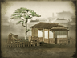
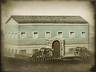

Requires
- Buildings: 
Enables
- Buildings: 
- Units:

Basic Building Statistics (can be modified by difficulty level, arts, skills, traits and retainers)
- Cost: 4200
- Recruitment capacity (units in training): +1
Description
Demolition is a delicate art.
A field artillery school allows the training of artillery units. Artillery can be divided into two broad categories: garrison and field artillery. Fortress guns were usually too large to be moved once in position. With the Victorian era obsession with the new, novel and bigger-as-better, artillery rapidly became larger and larger. However, there was a constant design compromise to be made between better firepower, and that meant an increase in size, and the need to be able to move guns to, and on, the battlefield. It was possible to make field guns in enormous calibres, but completely pointless as no horse team would ever be able to move them into action!